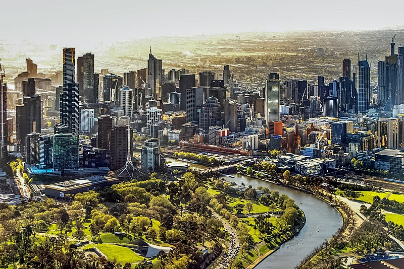

Sydney is the capital city of the state of New South Wales and the most populous city in Australia. Located on Australia's east coast, the metropolis surrounds Sydney Harbour and extends about 80 km (50 mi) from the Pacific Ocean in the east to the Blue Mountains in the west, and about 80 km (50 mi) from the Ku-ring-gai Chase National Park and the Hawkesbury River in the north and north-west, to the Royal National Park and Macarthur in the south and south-west. Greater Sydney consists of 658 suburbs, spread across 33 local government areas. Residents of the city are colloquially known as "Sydneysiders". The estimated population in June 2023 was 5,450,496, which is about 66% of the state's population. The city's nicknames include the Emerald City and the Harbour City

Melbourne is the capital and most populous city of the Australian state of Victoria, and the second-most populous city in Australia, after Sydney. Its name generally refers to a 9,993 sq km (3,858 sq mi) metropolitan area also known as Greater Melbourne, comprising an urban agglomeration of 31 local municipalities, although the name is also used specifically for the local municipality of City of Melbourne based around its central business area. The metropolis occupies much of the northern and eastern coastlines of Port Phillip Bay and spreads into the Mornington Peninsula, part of West Gippsland, as well as the hinterlands towards the Yarra Valley, the Dandenong Ranges, and the Macedon Ranges. As of 2023, the population of the metropolitan area was 5.2 million (19% of the population of Australia); inhabitants are referred to as "Melburnians".